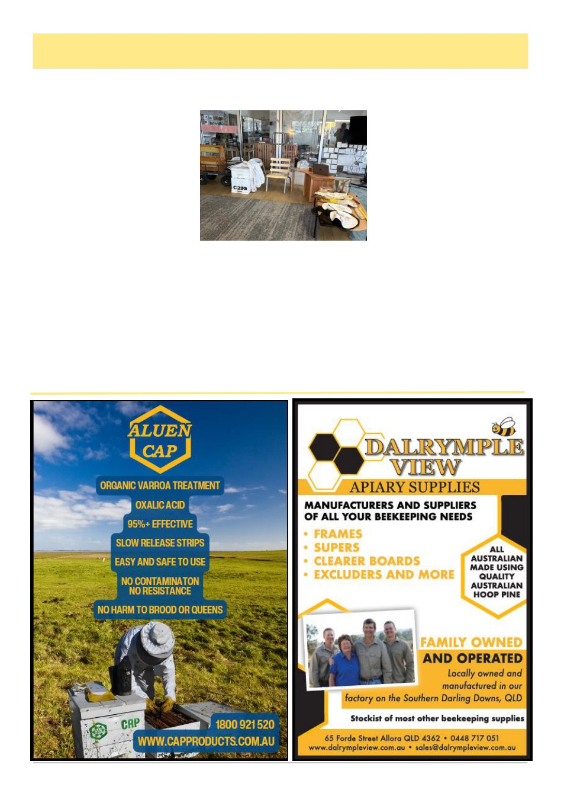

June 2026
9
By Jo Griffiths
Have you ever explained bees to a bunch of 3 - 5
year olds?
I was recently given the oppor-
tunity to do a bee incursion at a
childcare centre. Bearing in mind
their little brains have a short atten-
tion span and that they learn through
play, I structured my presentation to
last for around 20 minutes, and to
include as much ‗hands-on‘ experi-
ence as possible.
I started with the body parts,
highlighting a tongue that‘s like a
straw for drinking nectar, an extra
stomach for nectar, and pollen baskets on the back legs,
then we all wiggled our antennae and practiced pushing
the pretend pollen down into our pretend pollen baskets.
Then I explained the life cycle and 3 classes, and
played a video of bees hatching from the wax. After
showing them a (spotlessly clean) smoker, and opening
it to see the inside, I puffed some air into each face, and
then moved onto the parts of a hive, a hive tool to sepa-
rate pretend stuck boxes, a frame, some pieces of comb
that went from white to cream to brown to black, and
some wax that I had melted from the comb.
They loved being able to hold the comb and wax,
were surprisingly gentle, and returned all the pieces. I
showed them a bee brush and brushed their hands with
it, and then a queen clip which I
used on my finger - the kids were
very focused on what I was doing to
my finger!
We moved onto honey and I had
two jars of very different coloured
honey and some honeycomb to taste
using popsicle sticks (note to self,
take wet wipes in future), and ex-
plained how honey changes accord-
ing to what the bees have been eat-
ing.
I talked about how important
bees are and how poisons can hurt them, and then put
on my bee suit. I had a couple of hats with veils that
they loved trying on, with their teachers taking lots of
photos for the parents. I finished up talking about how
bees talk to each other through smells and dances, and
we all did a waggle dance across the room flapping our
wings and wiggling our bodies, then looking at the bees
in the observational hive before leaving the room.
All in all it was a great experience, including ―where
is the King?‖, only one kiddo saying he‘d been stung
one time, and another who kept coming back to touch
all the stuff he could.
World Bee Day May 20th